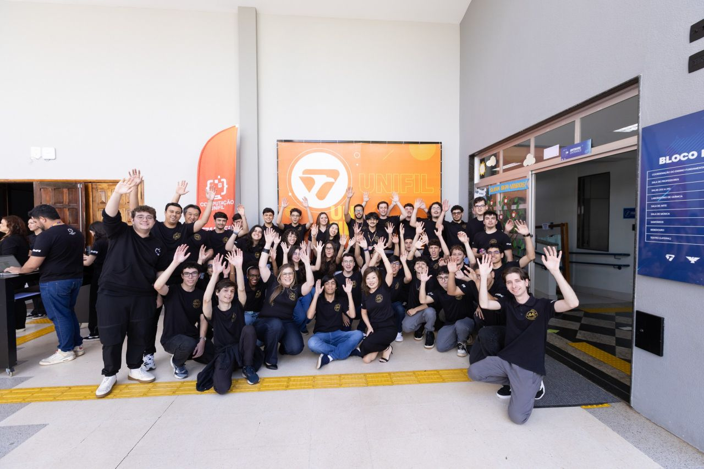
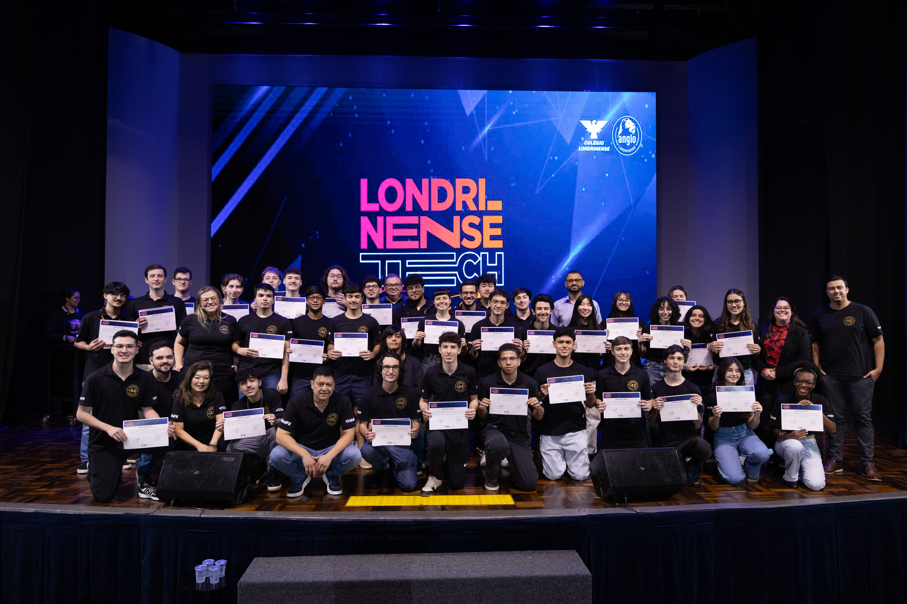
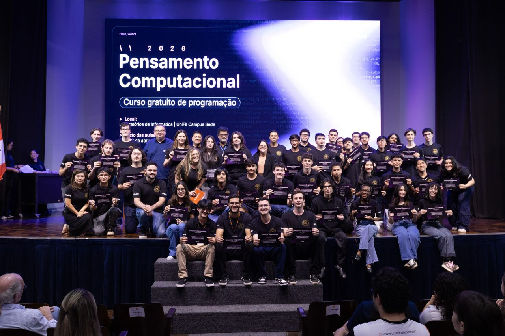

Atividades acadêmicas que realizei
NPI - Núcleo de Práticas de Informática
Durante o ano de 2026, passei minhas tardes no NPI, a empresa júnior dos cursos de TI da UniFil. Utilizei esse tempo para estudar não só pra fazer trabalhos, mas também para estudar um pouco além do que é passado em sala. O NPI também me possibilitou ser monitor no Londrinense Tech e no Pensamento Computacional.

Londrinense Tech
Durante o ano de 2026, participei como monitor no Londrinense Tech, na turma 1, do 6º ano. Foi uma experiência muito interessante, onde pude ver os alunos tendo o seu primeiro contato com esse novo mundo, que também é novo pra mim. Pude aprender muitas coisas além dos conteúdos.

Pensamento Computacional
Durante o ano de 2026, participei como monitor no Pensamento Computacional, na turma C. Foi uma experiência ainda mais interessante que o Londrinense Tech, pois onde pude ver alunos mais dedicados e interessados em aprender, pois é uma experiência única.
